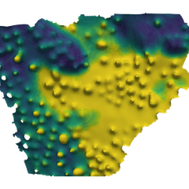
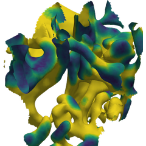
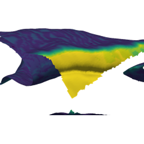
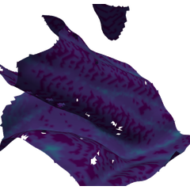
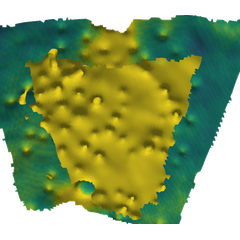

Nothing here is a finished result. This is working data, published so it can be read from the outside — every metric, every crop, and the caveats that go with them.

Explore Any metric, grouped by tissue, region or anatomy. One dot per crop.
Crops All 55 crops with their metadata and headline numbers.
Figures Every plot the pipeline produces, captioned.
Renders Paired 3D views per region, and the methods behind the membrane measurements.
Reference What a crop is, how to read the charts, and what all 94 metrics mean.
What you are looking at
A crop
A small cube of volume electron microscopy in which every cell, and the space between the cells, has been traced by hand. One crop is one piece of tissue. There are 55, and no crop appears in both arms of the comparison.
The two preparations
Two ways of preserving tissue before imaging. Chemical fixation is standard and is known to distort the extracellular space; rapid freezing should distort it less. These colours mean these two things on every chart on this site.
Regions
Crops are labelled by where in the tissue they came from — bile canaliculus, glomerulus, intercalated disc. Comparing like with like means comparing within a region, which is why the counts below matter.
The reference page goes further: why every metric is computed three times, and what all 94 of them measure.
Where the comparison is supported
A region can only support a comparison if both preparations have crops in it. 5 of 11 do not. Kidney — where the direction of the effect splits by region — is where most of the gaps are, so read kidney carefully.
| Tissue | Region | Chemical | Rapid HPF | |
|---|---|---|---|---|
| Cortex | no region assigned | 7 | 5 | |
| Heart | Cardiac interstitial | 2 | 2 | |
| Heart | Intercalated disc | 2 | 2 | |
| Kidney | DCT base | 1 | 3 | no comparison possible |
| Kidney | Glomerular | 2 | 2 | |
| Kidney | PCT base | 1 | 0 | no comparison possible |
| Kidney | PCT brush border | 2 | 0 | no comparison possible |
| Kidney | PCT lateral | 1 | 1 | no comparison possible |
| Liver | Bile canaliculus | 3 | 4 | |
| Liver | Hepatocyte lateral | 6 | 6 | |
| Liver | Space of Disse | 3 | 0 | no comparison possible |
What is measured
| Metric family | Metrics | Values |
|---|---|---|
| Basement-membrane sensitivity | 3 | 39 |
| Cell-to-cell gap | 14 | 2,674 |
| ECS width | 15 | 2,865 |
| Membrane shape | 21 | 4,011 |
| Membrane shape (mesh-based) | 23 | 1,265 |
| Surface area to volume | 8 | 1,528 |
| Volume fraction | 10 | 550 |
Each family is computed three ways — at native resolution, matched to 8 nm, and across a degradation series — so a difference can be checked against what resolution alone would produce. What the runs mean.
| Preparation | Crops |
|---|---|
| Chemical | 30 |
| Rapid HPF | 25 |
| Tissue | Crops |
|---|---|
| Cortex | 12 |
| Heart | 8 |
| Kidney | 13 |
| Liver | 22 |
Data
Everything here is generated from
all_metrics_long.csv (one row per measurement) and
all_metrics_wide.csv (one row per crop, run and
resolution), with names and units from metrics.json.
Rebuild with python scripts/collect_all.py.